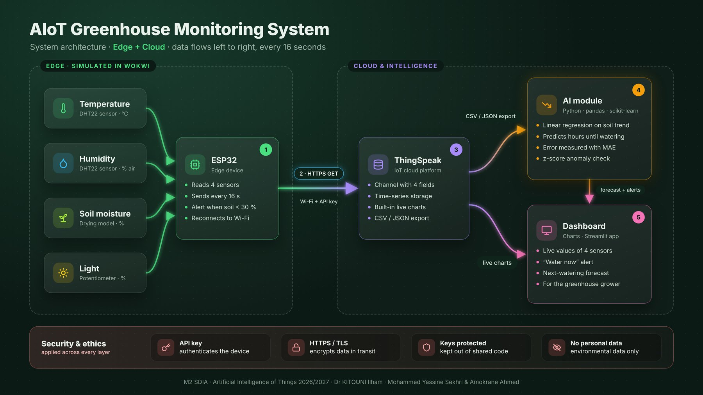
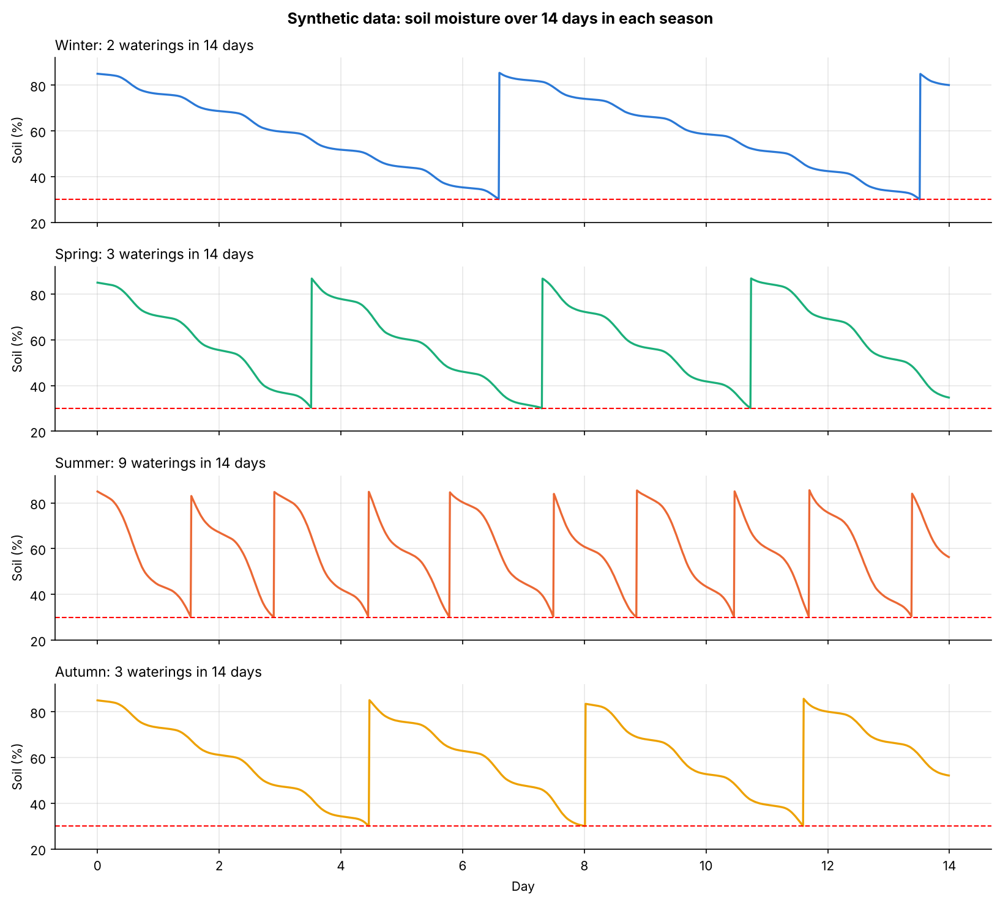
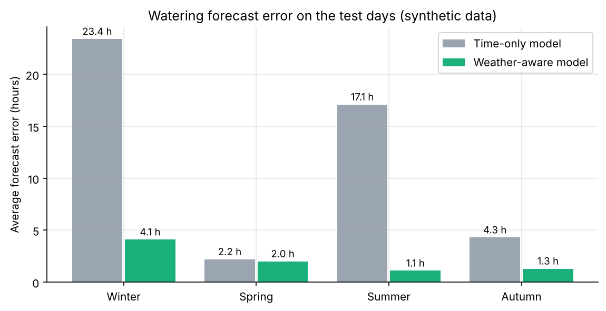

Greenhouse monitor: a simulated ESP32 sends readings to ThingSpeak, and the AI predicts when to water.

Every reading takes the same path, from the simulated greenhouse to this page.
Soil dries faster on a hot, bright, dry day than on a cool, humid night. This model learned that relationship, so it can predict how fast the soil is drying from the temperature, humidity and light, and from that, when the plant will need water.
The model studied 56 days of synthetic greenhouse data (14 days per season) and learned four numbers. Together they are the model:
Put the current readings into the formula to get the drying speed in % per hour. Then divide how far the soil is above 30 % by that speed: the result is the number of hours until watering. Try it below.
The training data is synthetic, generated by us from a simplified evaporation formula, not measured in a real greenhouse. The model shows how the approach works; real sensors would be needed to measure its accuracy on real plants.
| Test | Time-only model | Weather-aware model |
|---|---|---|
| Drying speed error, test days | 0.42 to 0.90 %/h | 0.11 to 0.21 %/h |
| Drying speed error, a season it never saw | 0.43 to 1.03 %/h | 0.14 to 0.39 %/h |
| Watering forecast error, summer | 17.1 h | 1.1 h |
| Watering forecast error, winter | 23.4 h | 4.1 h |


Run the weather-driven Wokwi sketch (version 2), in which the soil dries according to the same evaporation formula. Then open the Live ThingSpeak tab and connect your channel: the Weather-aware forecast card applies this model to every new reading and compares its predicted drying speed with the measured one.